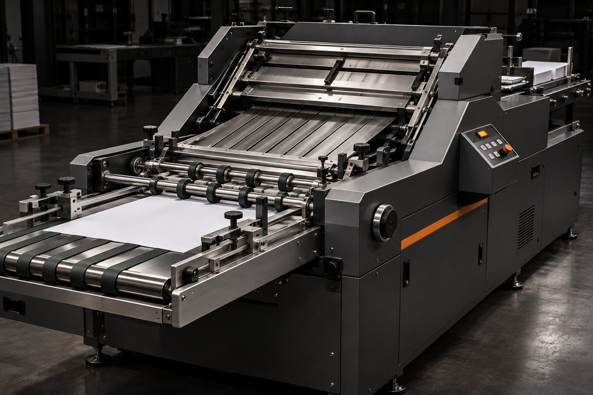

Automação gráfica
Controle para dobradeiras MBO
Retrofit para a indústria gráfica que integra o controle da dobradeira, a dobra janela e os contadores de passagem. A equipe acompanha a produção em tempo real pelo celular ou pelo computador.
- Controle de dobra janela
- Contagem de passagens
- Monitoramento via IoT